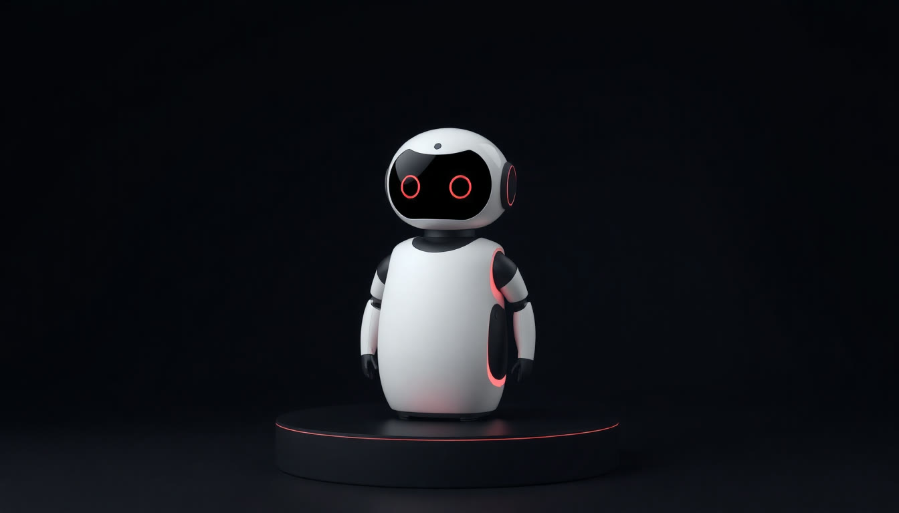
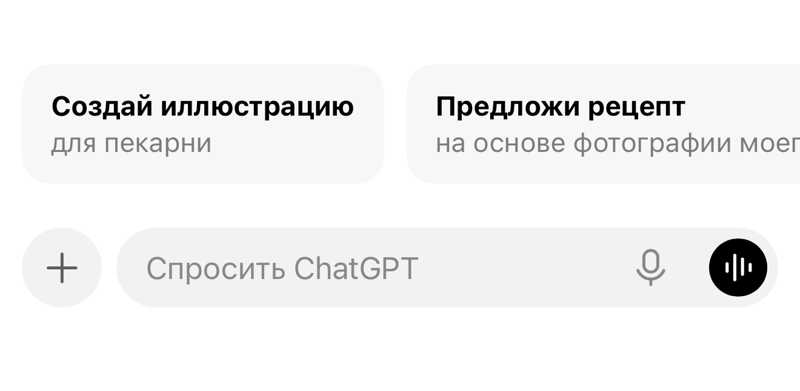
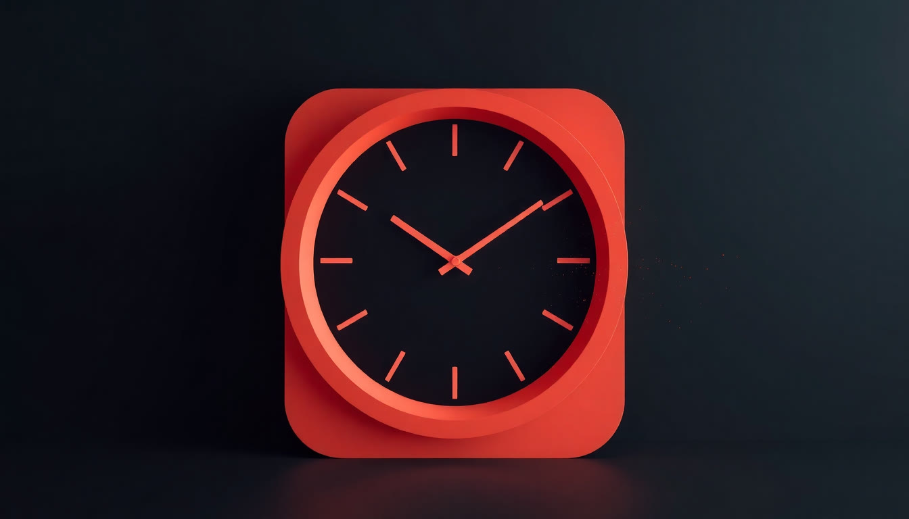

ИИ.
Новая реальность
Два часа: сначала картина мира, потом ваши руки.
Альберт Валеев

Восемь занятий, каждое строится на предыдущем
1 · Сегодня
- Погружение: навигатор по искусственному интеллекту
- Картина мира, как устроены модели, пять уровней работы
- Настраиваем ChatGPT под себя
2
- Промпт-инженерия: как думать вместе с ИИ
- Формула сильного запроса и приёмы докрутки
- Тут заканчивается «переписываю по пять раз»
3
- Ассистентный подход: сборка личных ассистентов
- Ассистент под одну функцию, а не под должность
- Собираем первого при вас
4
- Экосистема Google: рабочие инструменты и Canvas
- Проекты, режим работы, документы и таблицы
- После этого занятия второй платёж
5
- Визуал: генерация изображений и видео
- Картинка под задачу, а не «красивая абстракция»
6
- Упаковка: презентации, сайты, коммерческие предложения
- Документ, который не стыдно отдать наружу
7
- Агентный подход: автоматизация рабочих процессов
- Рутина, которая едет без вас
8 · Финал
- Стратегия: ИИ как рычаг роста и порядок внедрения
- Что внедряете первым, вторым, третьим
Пять договорённостей, без них результата не будет
Ритм простой: вторник, пятница, между ними работа
Курс собран под то, что вы написали
Назвали таблицы
Заполнение, сведение, отчёты, объёмы, выгрузки. Это самая частая боль группы, и мы будем её закрывать с первого занятия
Не открывали нейросеть ни разу
И это нормально. Занятие 1 построено так, что стартовать можно с нуля. Никто не останется позади
Занимаются с телефона
Компьютера нет, и это не помеха. Каждый шаг практики сегодня показываю и для ноутбука, и для телефона
Что ещё просили закрыть
Документы 14 человек · поиск и анализ 13 · автоматизация 12 · планирование 9 · переписка 8 · презентации 6
С чем работаете каждый день
Таблицы и цифры · переписки и чаты · документы · звонки и переговоры · тексты · люди и команда
Самая честная фраза из анкет
«Иногда приходится по пять раз переписывать». Это лечится на занятии 2, и лечится полностью
Ваш рабочий чат всю неделю вёл не человек
Это пятый уровень работы с ИИ.
Что успеем сегодня

Мир изменился,
пока мы работали
От «напиши текст» до «сделай работу целиком»
«Напиши пост»
Все поигрались с чат-ботом, удивились и вернулись к делам. ИИ равно забавная игрушка
«Сделай документ»
Тексты, таблицы, картинки, презентации. То, что большинство до сих пор считает потолком
«Сделай работу»
Агент сам ведёт задачу от начала до конца: ищет, считает, собирает, проверяет и сдаёт результат
Агент работает часами. Сам. Без вас
Агенты в ChatGPT
Даёте задачу, уходите на встречу. Возвращаетесь: готовая таблица, отчёт и презентация. Работает часами без вас
Коллега, а не чат
Инструмент программистов пришёл в офисы: 90% задач уже не про код. Документы, анализ, планирование
Ресёрч за минуты
Глубокое исследование рынка: десятки источников, проверка фактов, готовый отчёт. Раньше: неделя работы аналитика
Эту презентацию собрал
мой ИИ-агент. Этой ночью
80 лет никто не мог.
ИИ решил сам
Первый случай, когда ИИ сам закрыл знаменитую открытую задачу математики.

Миллиарды, а не проценты
JPMorgan
выгоды в год. Подсчёт главы банка Джейми Даймона, и он называет это верхушкой айсберга
Klarna
операторов заменил один ИИ-ассистент. Ответ клиенту: 2 минуты вместо 11
Walmart
к среднему чеку у покупателей, которым помогает ИИ-агент Sparky
«Сначала докажи, что ИИ не справится»
Shopify
Меморандум главы компании: нового сотрудника согласуют только после доказательства, что задачу не закрывает ИИ. Через месяц так же сделали Duolingo и десятки компаний
Duolingo
Первые 100 курсов делали 12 лет. Перестроили работу вокруг ИИ и выпустили 148 курсов за один год. Выручка впервые пробила миллиард долларов
Уже в магазинах, стройке и недвижимости
X5, «Пятёрочка»
операционной прибыли за год: ИИ в прогнозе спроса, ценах и запасах
ГК «Самолёт»
проданных квартир за полгода: ИИ-скоринг срезал отказы банков с 16% до 12%
Домклик
объявлений о продаже жилья уже пишет нейросеть, а не человек
Робот пробежал полумарафон быстрее мирового рекорда человека

Робот подешевел до цены подержанной машины
Гуманоид Unitree
цена в официальном магазине. Два года назад такой робот стоил около 85 тысяч долларов
Склады Amazon
роботов работает уже сейчас, почти столько же, сколько людей. 3 из 4 посылок проходят через руки робота
Waymo, США
платных поездок без водителя каждую неделю. Серьёзных аварий на 90% меньше, чем у людей. В России беспилотные КамАЗы прошли 6 млн км
Государства ставят на ИИ как когда-то на атом
США
вложит бигтех только за 2026 год. Плюс Stargate: $500 млрд на сеть гигантских дата-центров
Китай
ИИ обязательный предмет с первого класса во всех школах Пекина. Госплан: агенты в 70% отраслей к 2027
Раздают бесплатно
ОАЭ: ChatGPT Plus всем жителям страны. Эстония: всем старшеклассникам. Южная Корея: пакет на триллион долларов в ИИ и чипы
Россия: догоняет. А вы лично можете не ждать
Своё есть
у Алисы: самая используемая нейросеть страны. Плюс GigaChat: собственные модели у нас есть
Медицина Москвы
снимков разобрали 70 ИИ-сервисов московского здравоохранения
Мировой рейтинг
место России в мировом ИИ-индексе. Страна догоняет, а человек может обогнать страну
сила не в том, чтобы подключить нейросеть. Сила в выстроенной системе, где есть ограничители и человек на критических точках.
Вы не потеряете работу из-за ИИ.
Вы потеряете её из-за человека,
который использует ИИ
Чёрный ящик
Нейросеть, ИИ и LLM: это не одно и то же
Искусственный интеллект
Самое широкое слово. Сюда попадает всё: и калькулятор, и автопилот, и распознавание номеров на парковке. Просто «машина решает задачу»
Нейросеть
Это способ устройства, техническая схема. Нейросети распознают лица, ищут болезни на снимках, подбирают вам ленту. Говорить не умеют
LLM, языковая модель
Нейросеть, которую обучили на языке. ChatGPT, Claude, DeepSeek, Алиса. Именно с ними мы работаем весь курс

Представьте человека, который прочитал всё
Он не думает. Он подбирает следующее слово
Китайская комната

Он умеет уверенно ошибаться
1598 судебных дел
по всему миру, где юристы принесли в суд выдуманные нейросетью цитаты из решений. Дела реальные, цитаты нет
Deloitte вернула деньги
за отчёт правительству: в нём нашли несуществующие источники. Консалтинг первой величины, а проверить забыли
Что с этим делать
Цифры, даты, имена, ссылки и нормы проверяем всегда. Просим показать источник. Ответственность за результат остаётся на человеке
Его память это стол, а не сейф
Дело почти никогда не в нейросети
Как получается «вода»
Что меняет всё
Кого выбрать

Три мира нейросетей
Запад
ChatGPT самый сильный и универсальный, работаем на нём
Claude лучший по текстам и документам
Gemini от Google, силён в таблицах и почте
Китай
DeepSeek бесплатный и очень достойный
Qwen от Alibaba, хорош с файлами
Kimi держит огромные документы
Россия
Алиса AI от Яндекса, самая массовая в стране
GigaChat от Сбера, свои модели
Отстают на шаг, но данные остаются в российском контуре
Как выглядит рабочее место
Слева история
Все чаты сохраняются. Ничего не теряется, можно вернуться через месяц
Скрепка
Кидаете файл, фото, скан, таблицу, аудио. Он всё это читает
Микрофон
Можно просто говорить. Особенно удобно с телефона, руками не набираете
Новый чат
Главная кнопка. Новая задача равно новый чат, помните про стол
Откройте любую: окно одно и то же
Этот навык переносится в любую из них за пять минут.
Про доступ, один раз и по-честному
Платить или хватит бесплатного
| Что нужно | Бесплатно | Подписка |
|---|---|---|
| Обычные вопросы, письма, тексты | ✓ | ✓ |
| Загрузить файл, фото, скан, таблицу | ✓ | ✓ |
| Голосом вместо набора текста | ✓ | ✓ |
| Рассказать о себе один раз, чтобы он помнил | ✓ | ✓ |
| Много запросов подряд и самые новые модели | – | ✓ |
| Глубокое исследование на десятках источников | – | ✓ |
| Свои ассистенты и агенты, которые работают сами | – | ✓ |
Три инструмента на весь курс
ChatGPT
Здесь мы живём. chatgpt.com, вход через Google, VPN включён. Всё, что делаем руками, делаем тут
DeepSeek
Бесплатный, без VPN, очень достойный. chat.deepseek.com. Держите вторым окном на всякий случай
Рабочий чат группы
Записи, материалы, домашки, ответы на вопросы. Всё в одном месте, ничего искать не нужно
Можно не набирать. Можно говорить


Инструмент у всех одинаковый.
Результаты разные
Пять уровней
работы с ИИ
От «умного поисковика» до «рутина едет сама»
Умный поисковик
Рабочий инструмент каждый день
Второй пилот, который спорит с вами
Свои инструменты, собранные разговором
Агенты: рутина едет без вас
Где сегодня стоит эта группа
Первый уровень
Короткие вопросы, редкие заходы, ощущение «пока непонятно, зачем». Двое не открывали нейросеть ни разу, и это честный старт
Второй уровень
Заходят регулярно, загружают файлы, докручивают ответы. Вам сегодня будет чуть проще, но настройку всё равно делаем вместе
Третий уровень
Один человек в группе уже строит на ИИ процессы, а не просто спрашивает. К восьмому занятию таких будет большинство
Вот его мы сегодня и закроем, все вместе, в прямом эфире.
Куда мы поднимаемся и в каком порядке
Как это выглядит на пятом уровне

Я не делал работу.
Я ставил задачу
и принимал результат
Что остаётся человеку

Что он умеет
с вашими задачами
Двадцать вещей, которые он делает уже сегодня
Таблицы и цифры
- Свести текст, переписку или фото в аккуратную таблицу
- Найти в выгрузке пропуски, дубли и опечатки
- Посчитать итоги, доли, отклонения от плана
- Собрать сводку за период в двух абзацах
- Переложить данные в нужный формат и порядок колонок
Переписка и люди
- Прочитать длинную переписку и выдать суть на полстраницы
- Вытащить договорённости, сроки и что просрочено
- Написать черновик ответа в вашем тоне
- Переформулировать резкое письмо в спокойное
- Подготовить сложный разговор заранее
Документы и поиск
- Разобрать договор и показать, где вас подставляют
- Объяснить сложный документ человеческим языком
- Собрать досье на компанию перед встречей
- Сравнить два варианта по нужным критериям
- Проверить факты и показать источники
Звонки и рутина
- Превратить запись встречи в протокол с задачами
- Оценить разговор: что сделано хорошо, что упущено
- Собрать повестку и вопросы к встрече заранее
- Разложить рабочий день и снять с вас планирование
- Делать всё это по расписанию, без вашего участия
Из хаоса в таблицу за одну минуту
| Контрагент | Объём | Дата | Статус |
|---|---|---|---|
| Позиция 1 | 1 250 | 04.08 | закрыта |
| Позиция 2 | 860 | 06.08 | закрыта |
| Позиция 3 | 2 100 | пусто | нет даты |
| Позиция 4 | 430 | 11.08 | закрыта |
| Позиция 5 | 125 000 | 12.08 | проверьте |
Длинная переписка превращается в решение
Запись разговора становится протоколом
на 50 минут
сверяет
задачи, оценка
Протокол
Пять пунктов вместо пятидесяти минут аудио. Можно сразу отправлять участникам
Задачи
Кто, что, до какого числа. Готовый список, который переносится в трекер
Оценка разговора
Где не задали важный вопрос, где согласились слишком быстро, где не проговорили следующий шаг
Досье на компанию, с которой встречаетесь
Любой непонятный документ становится понятным
Как написано
«В случае наступления обстоятельств, предусмотренных п. 7.2, Сторона-1 вправе в одностороннем внесудебном порядке отказаться от исполнения обязательств с направлением уведомления не менее чем за 5 (пять) рабочих дней, при этом произведённые платежи возврату не подлежат»
Что это значит
Они могут выйти из сделки без суда, просто предупредив за пять дней. Деньги, которые вы уже заплатили, не вернут.
Что стоит попросить: либо возврат части платежа, либо такое же право для вас.
Он умеет работать по расписанию
Это работает не только на работе
Здоровье
- Объяснить заключение врача понятными словами
- Расшифровать анализы: что в норме, что нет
- Собрать вопросы к приёму заранее
- Разобраться в назначениях и совместимости
- Понять, что означают побочные эффекты в инструкции
- Подготовиться к обследованию по шагам
Личные деньги
- Разобрать условия кредита или вклада
- Посчитать, сколько кредит стоит на самом деле
- Свести расходы за месяц из выписки
- Найти, за что списали непонятное
- Сравнить два предложения по-честному
- Понять, выгодна ли рассрочка или это ловушка
Поездки и дом
- Маршрут под бюджет и под ваш характер
- Проверить договор перед покупкой квартиры или машины
- Выбрать технику без чтения сорока обзоров
- Разобраться в инструкции, которую невозможно читать
- Найти в тарифе оператора всё лишнее
- Собрать список покупок под меню на неделю
Половина ваших домашек будет как раз про это.
Теперь ваши руки
Собираем ваш
личный контур
Пусть он сам возьмёт у вас интервью
Задавай по одному вопросу за раз и жди моего ответа. Всего 8 вопросов, простым языком, без терминов.
Спроси про: чем я занимаюсь · моя роль и за что отвечаю · три задачи, что съедают больше всего времени · с чем работаю каждый день · кому сдаю результат и что для него важно · как мне удобнее получать ответы · чего в ответах делать не надо · что хочу изменить в работе за месяц.
Когда закончишь, собери всё в блок === РАБОЧЕЕ ДОСЬЕ ===, от первого лица, до 1400 знаков, без воды. Раньше восьмого вопроса досье не показывай.
Отвечайте коротко
Одно-два предложения на вопрос достаточно. Он сам достроит
Можно голосом
Нажали микрофон и просто рассказали. Особенно если вы с телефона
Имён и сумм не надо
Говорите «крупный контрагент», а не название. Функция важна, детали нет
Что должно быть на экране через 12 минут
Я работаю в компании, где основное это сделки с контрагентами. Каждый день свожу данные в таблицы...
Кладём досье туда, где он его не забудет
Для пятерых, кто занимается с телефона
Теперь спросим у него, чем он вам полезен
По каждому: название в три слова · что я даю тебе на входе · что получаю на выходе · сколько времени это экономит за неделю.
Только про мою работу, никакой общей теории. Отсортируй по экономии времени, сверху самое выгодное.
Обратите внимание на три вещи
Ответ персональный
У соседа он другой. Полчаса назад на тот же запрос он выдал бы вам обоим одинаковую воду. Разницу сделало досье
Он нашёл то, о чём вы не думали
Посмотрите на слепые зоны. Обычно там минимум одна вещь, от которой становится неловко: делали руками годами
Он посчитал ваши часы
Сложите экономию по всем десяти сценариям. Это ваш личный аргумент, зачем вы здесь восемь занятий
Двадцать минут работы, и он больше никогда не начнёт с вами с нуля.
И сразу один настоящий запрос
Что делать
Скажите, что за задача, для кого результат и в каком виде его хотите. Если есть файл или фото, приложите. Говорите так, как объяснили бы новому сотруднику в первый день.
Чего не делать
Не бросайте первый ответ. Если вышло не то, не начинайте новый чат, а скажите прямо: «слишком длинно», «сделай таблицей», «убери воду». Докрутка это норма, а не провал.

Что можно загружать, а что нельзя
Зелёная. Можно смело
Жёлтая. Сначала обезличить
Красная. Никогда
Взрослое обращение с ИИ
Пришли на первый уровень. Уходите со второго
Пятнадцать запросов, три обязательных
Обязательные
Распаковка личности: что он о вас понял
Куда утекает ваш день: где теряются часы
План на 7 дней: что внедрить первым
Для интереса
Разбор переписки · фото таблицы в порядок · голосовое в протокол · досье на компанию · совет четырёх экспертов · адвокат дьявола · и ещё шесть
Как сдать
Скриншот или текст того, что получилось, в чат группы. Плюс одна строка: что удивило. Разбираю каждую работу лично
Пятница, 21 августа, 08:00 по Москве

ИИ не сделает вашу
работу за вас.
Он сделает её вместе с вами
Через восемь занятий вы будете на нём стоять.